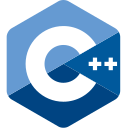
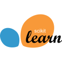

A. Sharma, A. S. Shamkuwar, U. Anand, R. Kumar, N. Kumar, M. Singh (2026). Spatio-Temporal Node Localization in Wireless Sensor Networks Using Hybrid Recurrent-Graph Neural Network. CIPHER 2026 · IEEE.
Hello, I’m
Uddeshay Anand,
Exploring how machines learn from data
and interact with the physical world.
About
A little about me.
I’m an engineer with a bachelor’s degree in mechanical engineering and a master’s degree in data analytics. I’m interested in how machines interpret their surroundings and interact with the physical world.
My experience includes industrial robotics, image retrieval, and EEG-based motor imagery classification. This work has connected my interests in engineering, computer vision, and signal processing while giving me opportunities to develop software, implement models, and evaluate their performance.
I’ve long wanted to work in robotics, particularly in robot perception, learning-based control, and human-centered intelligent systems. My research interests are motivated by a simple goal: to develop robots that assist people and are reliable enough to be trusted in everyday environments.
In the longer term, I hope to contribute to assistive technologies, including intelligent prosthetics. I enjoy working across disciplines and learning new technologies. I’m continuing to deepen my understanding of how perception, learning, and control can come together to create more capable and useful intelligent systems.
Skills
Tools & technical skills.
- Python

C++- PyTorch
- TensorFlow

scikit-learn- NumPy
- pandas
- SQL
 Keras
Keras Matplotlib
Matplotlib Git
Git Linux
Linux- MATLAB
- SolidWorks
- Power BI
 Jira
Jira
Publications
Papers & manuscripts.
IEEE XplorePublished work, conference contributions, and ongoing manuscripts.
U. Anand, K. K. Bharti, M. Sameer (2026). Multiband Attention Network for Motor Imagery EEG Classification. MBCC 2026 · IIT Mandi.
M. Sameer, K. K. Bharti, U. Anand (2026). ECOS-EEG: Evolutionary Channel Optimization for Subject-Independent EEG Emotion Recognition. ICCEEE 2026 · NIT Uttarakhand.
U. Anand, K. K. Bharti, M. Sameer. MBAN-AFBF: A Multi-Branch Gated Attention Network with Adaptive Spatial–Temporal–Spectral Feature Fusion for Motor Imagery EEG Decoding. Journal manuscript.
M. Sameer, K. K. Bharti, U. Anand. Discriminative Transformer Representation Learning from Complementary EEG Descriptors for Emotion Recognition. Journal manuscript.
A. Sharma, A. S. Shamkuwar, P. Bhardwaj, R. Kumar, N. Kumar, U. Anand, M. Singh. Mobile Node Localization in Wireless Sensor Networks Using Graph Neural Networks and Deep Learning Models. Journal manuscript.
Preprint buttons marked “link pending” are placeholders until the URLs are added.
Experience
Experience.
Oceaneering
Data Scientist · Previously Data Science Intern
Mar 2026 – Present
- Worked on model serving for the Image Query App, using Triton Inference Server to run DINOv2 inference for video-frame similarity search.
- Configured dynamic batching and evaluated model inference performance, improving throughput by 33% through request grouping.
- Built the retrieval workflow using DINOv2 embeddings and FAISS vector indexing to find visually similar video frames.
ALIMCO
Machine Learning Intern
Jan – May 2024
- Worked on a regression pipeline using EMG signals and current flex-sensor readings to predict prosthetic-ankle position feedback.
- Processed biomedical recordings with Python, NumPy, pandas, and SciPy; trained and evaluated linear regression and random-forest models.
- Contributed to an ML-assisted prosthetic-control concept combining muscle signals with position feedback for assistive-device development.
Infosys
Data Analytics Intern · In collaboration with Chandigarh Police
Jul 2022 – Feb 2023
- Analyzed cybercrime data with Chandigarh Police to identify crime patterns, including the prevalence of phishing attacks.
- Cleaned and preprocessed records with Python, pandas, and NumPy, then performed exploratory analysis to examine trends and anomalies.
- Created Matplotlib and Seaborn visualizations and analytical reports/dashboards to communicate findings and support stakeholder review.
Larsen & Toubro
Robotics Internship
May – Aug 2021
- Explored CAD-based offline robot programming, studying how workpiece geometry informs tool paths and connects mechanical design with robotics.
- This experience informed my later Python geometry prototype, which uses Trimesh and NumPy to extract STL contours, apply coordinate transforms, and export waypoint previews for inspection.
Teaching & academic contributions
Aug – Nov 2025
Teaching Assistant · Machine Learning
NIT Jalandhar
Assisted with course delivery, assignment design, and evaluation for a graduate-level course.
Jan – May 2025
Teaching Assistant · Python Programming
NIT Jalandhar
Supported course delivery and programming lab sessions for graduate students.
Projects
Projects & engineering work.
Work across visual search, predictive modeling, biomedical signals, and engineering geometry.
Vision & dataFeatured
Image Retrieval & Clustering
Built an interactive visual search application for a 100,000-image index. Combined ResNet50 embeddings, PCA, and K-Means to retrieve similar images and explore clusters through a Streamlit interface.
Signals & ML
MBAN-AFBF
Developed multi-branch attention models for motor imagery EEG decoding. Combined temporal convolutions, channel attention, and gated feature fusion in reusable TensorFlow modules for training, ablation studies, and evaluation.
Signals & MLFeatured
MB-ATNet
Implemented a multiband attention network to classify four imagined movements from EEG. Combined frequency-band filtering with channel and temporal attention, supported by a modular TensorFlow training and evaluation workflow.
Vision & data
Amazon ML Challenge 2025
Contributed to team experiments predicting product prices from catalog information. Explored transformer-based representations and FLAN-T5 approaches, with utilities for data splitting, model scoring, and submission validation.
Signals & ML
Neural Network from Scratch
Built a configurable neural network using NumPy to explore how models learn. Implemented forward propagation, backpropagation, and multiple optimizers, with MNIST and Fashion-MNIST experiments and hyperparameter sweeps.
Signals & MLFeatured
Aircraft Engine RUL Prediction
Built a pipeline to estimate aircraft engine remaining life from NASA C-MAPSS sensor data. Compared regression models using engine-level validation and delivered batch prediction tools, saved models, and evaluation reports.
Signals & ML
EMG-Based Prosthetic Ankle Prediction
Developed an offline workflow to predict prosthetic-ankle flex-sensor readings from EMG and position inputs. Compared linear regression and random forests against a persistence baseline using chronological evaluation.
Robotics & engineering
Three-Axis CNC Milling Machine
Contributed to a team project on a three-axis CNC milling machine. Documented the mechanical design and extended the portfolio with Python motion calculations, toolpath examples, and a conceptual assembly model.
Vision & data
Cybercrime Data Analysis
Built an analysis workflow to explore geographic and temporal patterns in reported cybercrime counts. Combined data cleaning, clustering, regression comparisons, and Tableau data preparation to communicate trends and findings.
Robotics & engineeringFeatured
CAD-to-Robot Offline Programming
Built a Python geometry prototype to turn STL cross-sections into inspectable robot tool paths. Used contour extraction and coordinate transforms to generate waypoint exports, path visualizations, and non-executing KRL previews.
Education
Academic Background.
2024 – 2026
NIT Jalandhar
M.Tech in Data Analytics
CGPA: 8.20 / 10
2020 – 2024
Panjab University, Chandigarh
B.E. in Mechanical Engineering
CGPA: 8.18 / 10
Achievements
- GATE 2024
Qualified in Computer Science & Engineering 91.73 percentile
- AICTE GATE Scholarship
Awarded a merit-based stipend for M.Tech studies by AICTE, Government of India.
- Full Tuition Fee Waiver
Awarded for ranking among the top six students in the undergraduate cohort; covered four semesters across the first and final years.
- Amazon ML Challenge 2025
Ranked in the top 200 among 7,000+ participants nationwide.
- DST Chandigarh Project Grant
Received ₹50,000 from DST Chandigarh to develop a lab-scale three-axis CNC milling machine.
Contact
Let’s connect.
Let’s discuss what we can build or investigate.
I’m always interested in exchanging ideas, exploring collaborations, and working on meaningful problems. Feel free to reach out to discuss a project, a research question, or an opportunity to work together.
uddeshay.oj@gmail.com